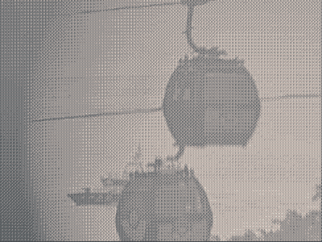

uri: https://mapo-t0fu.github.io/resources/view-from-mount-faber
- title
- View from Mount Faber
- type
- Still Image
- creator
- mapo-tofu
- date
- 2023-12-31
- description
- A photograph of cable cars taken through a set of public binoculars at the peak of Mount Faber.
- image
-
